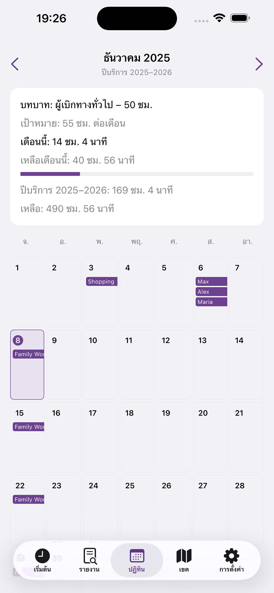
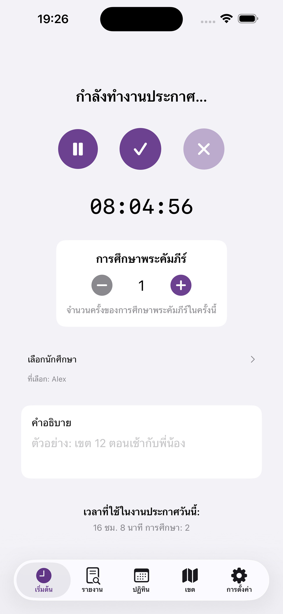
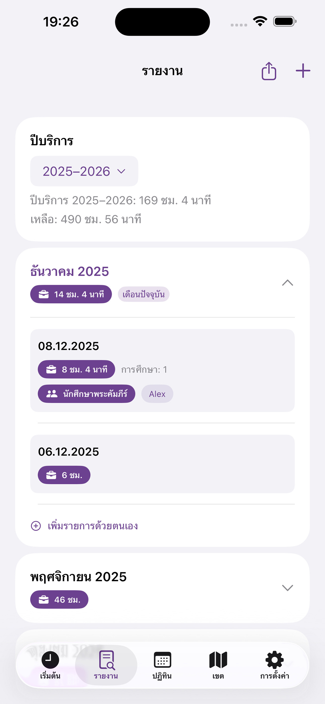
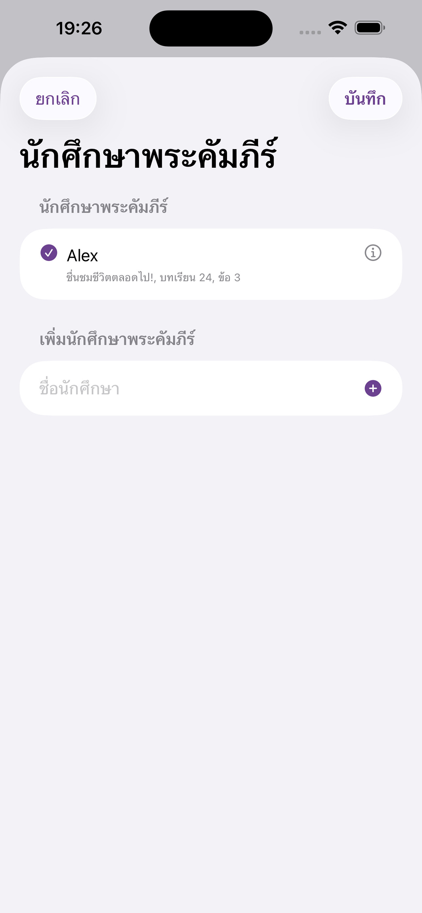
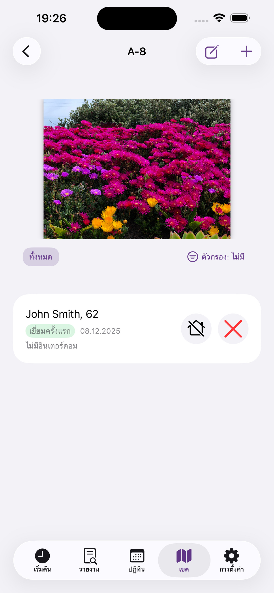
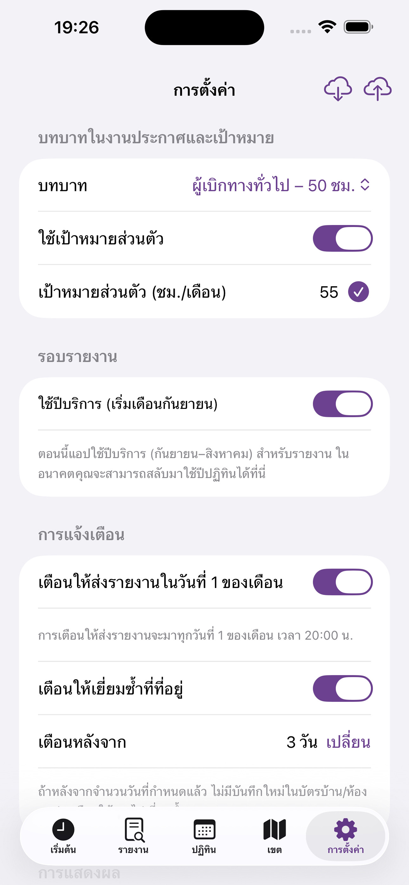
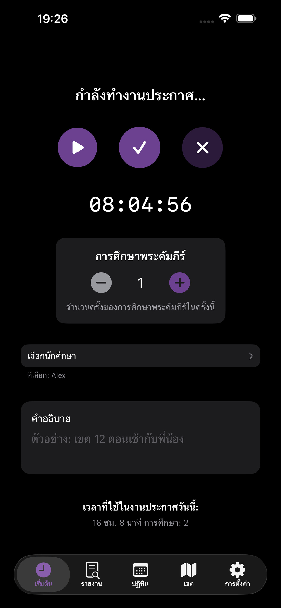
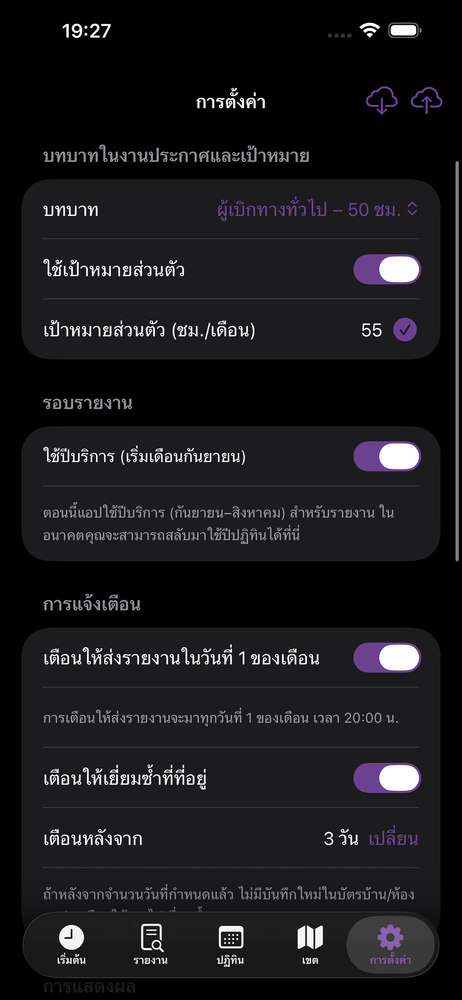
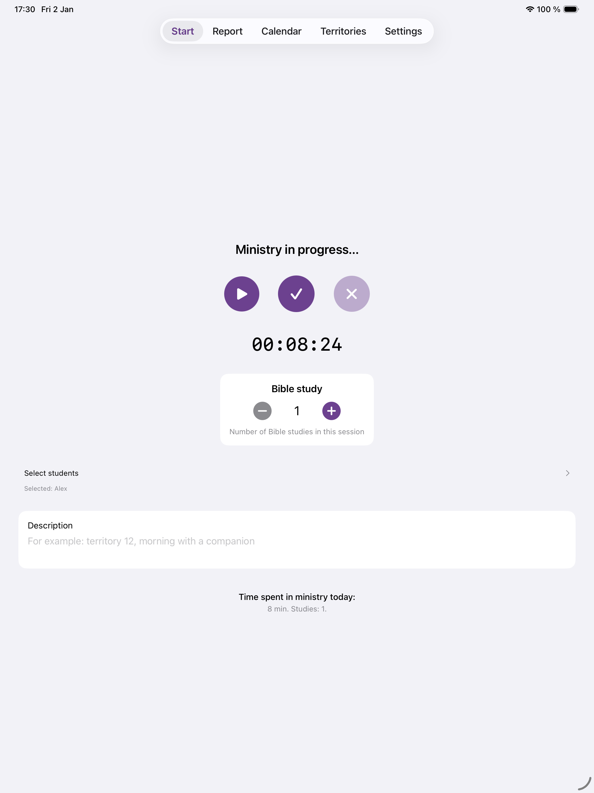

ผู้ช่วยครบวงจรสำหรับงานประกาศและไพโอเนียร์
JW Ministry คือแอปสำหรับงานประกาศของพยานพระยะโฮวาบน iPhone และ iPad: ตัวจับเวลาพร้อม Live Activities รายชื่อนักศึกษาคัมภีร์ไบเบิล รายงานประจำปีการรับใช้ เป้าหมายชั่วโมงไพโอเนียร์ และบัตรเขตประกาศตามบ้าน



ดูทุกหน้าจอของแอป JW Ministry
ภาพหน้าจอจริงภาษาไทย — ตั้งแต่นาฬิกาจับเวลา รายชื่อนักศึกษาคัมภีร์ไบเบิล ปฏิทินไพโอเนียร์ บัตรเขตประกาศ ไปจนถึงโหมดมืด OLED








เครื่องมือครบครันเพื่อการรับใช้ที่เป็นระเบียบ
ออกแบบมาเพื่อผู้ประกาศ ไพโอเนียร์สมทบ ไพโอเนียร์ประจำ และไพโอเนียร์พิเศษ
ตัวจับเวลาอัจฉริยะ วิดเจ็ต และ Dynamic Island
เริ่มจับเวลาจากแอป วิดเจ็ตบนหน้าจอโฮม หรือหน้าจอล็อก เวลาที่กำลังเดินจะแสดงอยู่บน Dynamic Island เสมอ
บันทึกการศึกษาคัมภีร์ไบเบิลและความก้าวหน้า
เชื่อมโยงการศึกษากับรายการรายงานประจำวัน ติดตามบทเรียนของนักศึกษาแต่ละคนในหนังสือ “ชีวิตที่มีความสุขตลอดไป!”
รองรับทุกเป้าหมายของไพโอเนียร์และเป้าหมายส่วนตัว
รองรับผู้ประกาศ ไพโอเนียร์สมทบ (15 หรือ 30 ชม.) ไพโอเนียร์ประจำ (50 ชม.) ไพโอเนียร์พิเศษ (90 / 100 ชม.) และเป้าหมายรายเดือนที่กำหนดเอง
ปีการรับใช้ (ก.ย.–ส.ค.) และปฏิทิน
วางแผนการออกประกาศและการนมัสการประจำครอบครัว เปรียบเทียบชั่วโมงที่วางแผนไว้กับเวลาจริง และปัดเพื่อย้ายแผนเข้าสู่รายงานทันที
บัตรเขตประกาศ อาคารชุด และแจ้งเตือนการกลับไปเยี่ยม
สร้างบัตรเขตประกาศพร้อมรูปถ่าย 10 สี และตัวสร้างเลขห้องอาคารชุดอัตโนมัติ ค้นหาตามชื่อหรือบ้านเลขที่ได้ทันที
ความเป็นส่วนตัวในเครื่อง 100% และสำรองข้อมูล iCloud
ไม่ต้องลงทะเบียนและไม่มีเซิร์ฟเวอร์ภายนอก ข้อมูลและรูปถ่ายทั้งหมดอยู่ใน iPhone/iPad ของคุณเท่านั้น
มีอะไรใหม่ในเวอร์ชัน 1.8
- รวมชั่วโมงที่วางแผนไว้ในแต่ละเดือนอัตโนมัติในปฏิทิน พร้อมแถบเปรียบเทียบ แผน vs เวลาจริง
- ปัดรายการที่วางแผนไว้ในปฏิทินเพื่อแปลงเป็นรายการในรายงานได้ทันที
- ค้นหาตามที่อยู่หรือชื่อเจ้าของบ้านในทุกเขตประกาศ และธีมสีบัตรเขตประกาศ 10 สี
- รองรับการเลือกปีการรับใช้ถัดไป (2026–2027) ในแท็บรายงาน
- ปรับปรุงให้รองรับ iOS และ iPadOS ล่าสุด พร้อมระบบป้องกันข้อมูลสำรองที่ปลอดภัยยิ่งขึ้น
ทำไมผู้ประกาศและไพโอเนียร์จึงเลือก JW Ministry
เปรียบเทียบฟีเจอร์สำหรับการจดรายงาน ตารางเวลาไพโอเนียร์ และการดูแลเขตประกาศ
| ฟีเจอร์ | สมุดจดกระดาษ | แอปแบบเก่า | JW Ministry 1.8 |
|---|---|---|---|
| ตัวจับเวลาสดบนหน้าจอล็อกและ Dynamic Island | ไม่มี | ไม่มี | มี (Live Activities) |
| คำนวณชั่วโมงไพโอเนียร์ (15, 30, 50 ชม.) และปีการรับใช้ (600 ชม.) | คิดเลขเอง | บางส่วน | อัตโนมัติ + เป้าหมายส่วนตัว |
| เปรียบเทียบ แผน vs เวลาจริง ในปฏิทินและปัดเข้าสู่รายงาน | ไม่มี | ไม่มี | ปัดครั้งเดียว |
| ตัวสร้างห้องอาคารชุด + รูปแผนที่เขตประกาศและ 10 สี | กระดาษโน้ต | ข้อความเท่านั้น | บัตรพร้อมรูป + ค้นหาด่วน |
| แจ้งเตือนการกลับไปเยี่ยมและเตือนส่งรายงานวันที่ 1 ของเดือน | ไม่มี | พื้นฐาน | การแจ้งเตือนอัจฉริยะ iOS |
| เก็บในเครื่อง 100% และสำรองข้อมูลพร้อมรูปไปยัง iCloud Drive | หายง่าย | ข้อมูลหายเมื่อเปลี่ยนเครื่อง | ออฟไลน์ 100% และปลอดภัย |
| รองรับ iOS ล่าสุด, iPad, โหมดมืด OLED และกว่า 35 ภาษา | — | หยุดอัปเดต | ดีไซน์มาตรฐาน SwiftUI |
สร้างขึ้นเพื่อการประกาศและงานไพโอเนียร์ของพยานพระยะโฮวา
JW Ministry ช่วยผู้ประกาศและไพโอเนียร์ตลอดปีการรับใช้อย่างไร
ไพโอเนียร์ประจำและไพโอเนียร์พิเศษ (50, 90 และ 100 ชม. / ปีการรับใช้ 600 ชม.)
ติดตามเป้าหมายรายเดือน 50 ชั่วโมงและเป้าหมาย 600 ชั่วโมงในปีการรับใช้ (กันยายน–สิงหาคม) ตั้งเป้าหมายส่วนตัว (เช่น 55 ชม.) และเปรียบเทียบแผนกับเวลาจริงในปฏิทิน
- คำนวณชั่วโมงคงเหลือ 50 ชม./เดือน และ 600 ชม./ปีอัตโนมัติ
- ตั้งเป้าหมายชั่วโมงรายเดือนส่วนตัวได้ (เช่น 55 ชม.)
- แถบคู่เปรียบเทียบชั่วโมงที่วางแผนไว้กับชั่วโมงจริง
ไพโอเนียร์สมทบ (15 และ 30 ชั่วโมง) และผู้ประกาศ
ในช่วงการรณรงค์พิเศษหรือเทศกาลอนุสรณ์ สลับเป็นไพโอเนียร์สมทบ 15 หรือ 30 ชั่วโมงได้ในแตะเดียว พร้อมแจ้งเตือนส่งรายงานวันที่ 1 เวลา 20:00 น.
- สลับเป้าหมายไพโอเนียร์สมทบ 15 หรือ 30 ชั่วโมงได้ทันที
- แชร์รายงานประจำเดือนด้วยการแตะครั้งเดียว
- แจ้งเตือนอัตโนมัติวันที่ 1 ของทุกเดือน เวลา 20:00 น.
เขตประกาศตามบ้าน อาคารชุด และการกลับไปเยี่ยม
สร้างบัตรเขตประกาศดิจิทัลพร้อมรูปแผนที่ 10 สี และตัวสร้างเลขห้องตามชั้น บันทึกบ้านที่ไม่อยู่และค้นหาตามชื่อหรือที่อยู่ได้ทันที
- สร้างรายการห้องพักอาคารชุดตามทางเข้าและชั้น
- แนบรูปแผนที่ 10 สี และค้นหาตามชื่อหรือที่อยู่
- แจ้งเตือนเมื่อถึงกำหนดกลับไปเยี่ยม
ติดตามนักศึกษาคัมภีร์ไบเบิลและทางเลือกใหม่แทนแอปเก่า
บันทึกบทเรียนปัจจุบันของนักศึกษาในหนังสือ “ชีวิตที่มีความสุขตลอดไป!” ออกแบบมาเพื่อ iPhone และ iPad โดยเฉพาะ
- บันทึกความก้าวหน้าหนังสือ “ชีวิตที่มีความสุขตลอดไป!”
- รองรับวิดเจ็ต Dynamic Island และโหมดมืด OLED
- ทางเลือกที่ทันสมัยแทนแอป ServicePlanner และ MyTime
รีวิวจากผู้ประกาศและไพโอเนียร์
ความเห็นจากพี่น้องที่ใช้ JW Ministry ในงานประกาศทุกวัน
“การเห็นชั่วโมงที่วางแผนไว้ในปฏิทินเทียบกับเวลาจริงช่วยให้จัดตาราง 50 ชั่วโมงต่อเดือนได้ง่ายขึ้นมากครับ”
“ตัวจับเวลาบนหน้าจอล็อกและการปัดแผนจากปฏิทินเข้าสู่รายงานสะดวกมาก แอปสะอาดและไม่มีโฆษณาเลย”
“ฟีเจอร์สร้างเลขห้องคอนโดและค้นหาชื่อในเขตประกาศช่วยแทนที่กระดาษโน้ตทั้งหมดของผมได้อย่างสมบูรณ์”
แปลครบถ้วนกว่า 35 ภาษา
หน้าจอแอป วิดเจ็ต และการแจ้งเตือนจะปรับตามภาษาของ iPhone หรือ iPad โดยอัตโนมัติ:
สนับสนุนการพัฒนา JW Ministry
JW Ministry ให้บริการฟรี ไม่มีโฆษณาและไม่มีค่ารายเดือน หากแอปนี้ช่วยให้การรับใช้ของคุณง่ายขึ้น คุณสามารถร่วมสนับสนุนการอัปเดต iOS และค่าธรรมเนียม Apple Developer รายปีได้:
โอนคริปโตโดยตรง (ค่าธรรมเนียม 0%)
โอนตรงเข้ากระเป๋าผู้พัฒนา:
TQQxYhThQGngj887Lvq9TnKtyyYMcUDFNw
UQBNBroTUyMG0YqgiHGXwVKO_rKe5d2y7gXqvICREjBwuKYk
คำถามที่พบบ่อย (FAQ)
JW Ministry ใช้งานร่วมกับแอป JW Library อย่างไร?
ในขณะที่ JW Library ใช้สำหรับอ่านคัมภีร์ไบเบิล สิ่งพิมพ์ และการประชุม แอป JW Ministry ถูกสร้างขึ้นเพื่อจดบันทึกการรับใช้ส่วนตัวของคุณ: จับเวลา วางแผนตารางไพโอเนียร์ (15, 30, 50 ชม.) บันทึกเขตประกาศ และติดตามนักศึกษาคัมภีร์ไบเบิล
รายงานและบันทึกเขตประกาศของฉันถูกเก็บไว้ที่ไหน?
เก็บไว้ในหน่วยความจำ iPhone หรือ iPad ของคุณเท่านั้น ไม่มีการส่งข้อมูลใดๆ ไปยังเซิร์ฟเวอร์ภายนอก
จะย้ายข้อมูลไปยัง iPhone เครื่องใหม่ได้อย่างไร?
ในแท็บการตั้งค่า แตะไอคอนคลาวด์มุมขวาบนเพื่อส่งออกไฟล์สำรองข้อมูลไปยัง iCloud Drive แล้วกู้คืนบนเครื่องใหม่ได้ทันที
ใช้งานขณะออกประกาศโดยไม่มีอินเทอร์เน็ตได้ไหม?
ได้ 100%! ทุกฟีเจอร์ทำงานแบบออฟไลน์โดยไม่ต้องใช้อินเทอร์เน็ต